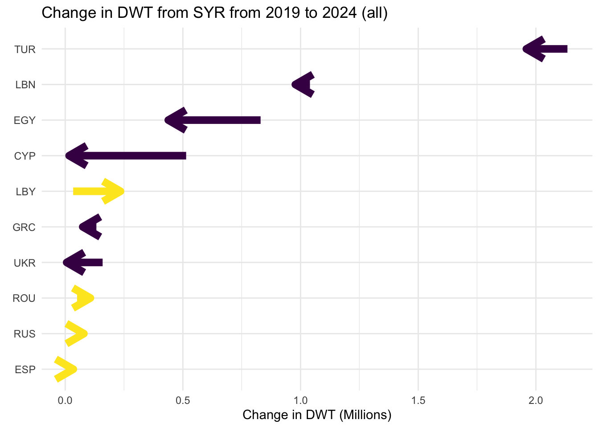

Code
.plot-section {
background-color: #F4F9FD;
padding: 20px;
border-radius: 10px;
}.plot-section {
background-color: #F4F9FD;
padding: 20px;
border-radius: 10px;
}library(readxl)
library(jsonlite)
library(httr)
library(dplyr)
library(stringr)
library(ggplot2)
library(plotly)
library(htmltools)
open_7z <- function (series_name) {
version <- str_interp("https://unctadstat-api.unctad.org/api/reportMetadata/${series_name}/bulkfile/") %>%
GET() %>%
.$content %>%
rawToChar() %>%
fromJSON() %>%
.$version
file_id <- str_interp("https://unctadstat-api.unctad.org/api/reportMetadata/${series_name}/${version}/bulkfiles/en") %>%
GET() %>%
.$content %>%
rawToChar() %>%
fromJSON() %>%
.$fileId
url <- str_interp("https://unctadstat-api.unctad.org/api/reportMetadata/${series_name}/${version}/bulkfile/${file_id}/en")
file_name_like <- str_replace(series_name, "\\." , "_")
tmps <- tempfile(fileext = ".7z")
download.file(url, tmps, quiet = T, mode = "wb")
tmps_path <- str_split(tmps, "/")
tmps_file <- str_split(tmps, "/")[[1]][length(tmps_path[[1]])]
tmps_path <- paste0(paste(tmps_path[[1]][1:length(tmps_path[[1]])-1], collapse="/"), "/")
# unzip the file
system(str_interp('cd ${tmps_path} && /opt/homebrew/bin/7z x ${tmps_file} -aoa > nul && rm nul'))
for (csv_file in list.files(tmps_path)) {
if (grepl(file_name_like, csv_file)) {
rawdata <- read.csv(paste0(tmps_path, csv_file), header=T, stringsAsFactors=F)
system(str_interp('rm ${paste0(tmps_path, csv_file)}'))
}
}
unlink(tmps)
return (rawdata)
}
# population
pop <- open_7z("US.PopTotal")
pop <- pop %>%
rename(population=Absolute.value.in.thousands, country=Economy.Label, year=Year) %>%
group_by(year) %>%
mutate(total_world=population[country=="World"],
share_pop=population*100/ total_world) %>%
select(country, year, population, share_pop) %>%
mutate(population = population / 1000, year = as.numeric(year)) # population is originally in thousands
# GDP
GDP <- open_7z("US.GDPTotal")
GDP <- GDP %>%
rename(GDP_market_2015=US..at.constant.prices..2015..in.millions,
country=Economy.Label,
code=Economy,
year=Year,
GDP_market_current=US..at.current.prices.in.millions) %>%
group_by(year) %>%
mutate(total_world=GDP_market_2015[country=="World"],
share_GDP_market_2015=GDP_market_2015*100/ total_world) %>%
mutate(total_world=GDP_market_current[country=="World"],
share_GDP_market_current=GDP_market_current*100/ total_world) %>%
select(country, year, GDP_market_2015, GDP_market_current, share_GDP_market_2015, share_GDP_market_current, code)
merch <- read.csv(file.path("US_TradeMerchTotal.csv"))
merch = merch %>%
rename(code=Economy,
year=Year,
country=Economy.Label,
share_trade=Percentage.of.total.world,
dollar_trade = `US..at.current.prices.in.millions`) %>%
group_by(code, year, country) %>%
summarise(share_trade=mean(share_trade),
dollar_trade=mean(dollar_trade)) %>%
ungroup() %>%
left_join(pop %>% select(country, year, share_pop, population),
by = c("country" = "country", "year" = "year")) %>%
left_join(GDP %>% select(country, year, share_GDP_market_2015, GDP_market_2015),
by = c("country" = "country", "year" = "year")) %>%
mutate(share_trade_over_share_pop = share_trade/share_pop,
share_gdp_over_share_pop = share_GDP_market_2015/share_pop)
# Function to generate a plotly line plot
generate_line_plot <- function(data, y_var, end_labels = NULL, title=NULL) {
# Default end_labels if not provided
if (is.null(end_labels)) {
end_labels <- data %>%
filter(year == 2023) %>%
mutate(year = 2025)
}
# Create ggplot
ggplot_object <- ggplot(data, aes(x = year, y = .data[[y_var]], colour = country, group = country,
text = paste(
"Country:", country,
"<br>Year:", year,
"<br>Pop:", round(population, 4),
"<br>GDP (2015$ market):", round(GDP_market_2015, 4),
"<br>Trade ($):", round(dollar_trade, 4),
"<br>Pop Share:", round(share_pop, 4),
"<br>GDP Share:", round(share_GDP_market_2015, 4),
"<br>Trade Share:", round(share_trade, 4),
"<br>", y_var, ":", round(.data[[y_var]], 4)))) +
geom_line(linetype = "solid", size = 1) +
geom_text(
data = end_labels,
aes(x = year, y = .data[[y_var]], label = country, colour = country),
size = 4, hjust = 0 # Position the labels near the lines
) +
labs(
title = title,
x = NULL,
y = NULL
) +
theme_minimal(base_size = 14) +
theme(
plot.title = element_text(hjust = 0.5, size = 16, face = "bold"),
axis.text = element_text(size = 12),
axis.title = element_text(size = 14),
panel.grid.minor = element_blank(),
plot.margin = unit(c(1, 5, 1, 1), "lines") # Extend margin for end labels
) +
expand_limits(x = c(NA, 2027.5), y=c(0,NA)) # Extend x-axis for end labels
# Convert to Plotly plot
ggplotly(ggplot_object, tooltip = "text") %>%
layout(
showlegend = FALSE,
plot_bgcolor = "#F4F9FD", # Set the plot background color
paper_bgcolor = "#F4F9FD" # Set the paper background color (outside of plot area))
)
}
# Function to generate the HTML title and subtitle
generate_html_title <- function(title, subtitle) {
paste0(
"<div style=\"padding: 0px; text-align: left;\">",
"<h1 style=\"margin: 0; color: #343a40; font-family: Inter; font-size: 35px\">",
"<b><img src=\"https://raw.githubusercontent.com/bakered/co2emmisions/main/src_shiny_app/static/Arrow.png\"alt=\"Image\" style=\"width: 60px; height: 60px; vertical-align: middle; margin-right: 10px;\">",
title, "</b>",
"</h1>",
"<h2 style=\"margin: 10px 0 0; color: #343a40; font-family: Inter; font-size: 18px; font-weight: normal;\">",
subtitle,
"</h2>",
"</div>"
)
}
syr_merch = merch %>%
filter(year>1999) %>%
filter(country %in% c("Syrian Arab Republic", "Lebanon", "Iraq", "Jordan", "Saudi Arabia", "Yemen"))
end_labels_custom <- syr_merch %>%
filter(year == 2023)
#end_labels_custom$year = c(2005,2011,2023,2016, 2024.2)
#end_labels_custom$share_over_share = c(0.45,0.8,0.13,0.23, 0.02)
#palestine, lebanon, syria, egypt yemen
plotly_plot_pop <- generate_line_plot(data = syr_merch, y_var = "population") #, end_labels = end_labels_custom)
html_title_pop <- generate_html_title("Syria's Population is the same as in 2011",
"But ~6.5 million refugees have fled, primarily to Turkey. (Population in millions.)")
syr_merch = merch %>%
filter(year>1999) %>%
filter(country %in% c("Syrian Arab Republic", "Lebanon", "Jordan", "Bulgaria"))
end_labels_custom <- syr_merch %>%
filter(year == 2023)
#end_labels_custom$year = c(2005,2011,2023,2016, 2024.2)
#end_labels_custom$share_over_share = c(0.45,0.8,0.13,0.23, 0.02)
#palestine, lebanon, syria, egypt yemen
plotly_plot_gdp <- generate_line_plot(data = syr_merch, y_var = "GDP_market_2015", title="Real GDP, millions, market rates") #, end_labels = end_labels_custom)
plotly_plot_gdp_share <- generate_line_plot(data = syr_merch, y_var = "share_GDP_market_2015", title="GDP Share of World ") #, end_labels = end_labels_custom)
html_title_gdp <- generate_html_title("Syria's GDP",
"")
syr_merch = merch %>%
filter(year>1999) %>%
filter(country %in% c("Syrian Arab Republic", "Lebanon", "Turkiye", "Cyprus", "Israel", "Libya"))
end_labels_custom <- syr_merch %>%
filter(year == 2023)
#end_labels_custom$year = c(2005,2011,2023,2016, 2024.2)
#end_labels_custom$share_over_share = c(0.45,0.8,0.13,0.23, 0.02)
#palestine, lebanon, syria, egypt yemen
plotly_plot_east_med <- generate_line_plot(data = syr_merch, y_var = "share_trade_over_share_pop") #, end_labels = end_labels_custom)
syr_merch = merch %>%
filter(year>1999) %>%
filter(country %in% c("Syrian Arab Republic", "Lebanon", "Egypt", "State of Palestine", "Yemen"))
end_labels_custom <- syr_merch %>%
filter(year == 2023)
end_labels_custom$year = c(2005,2010.5,2023,2016, 2024.3)
end_labels_custom$share_trade_over_share_pop = c(0.45,0.85,0.13,0.23, 0.02)
#palestine, lebanon, syria, egypt yemen
html_title_merch <- generate_html_title("Share of Merchandise Trade",
"Share of world merchandise trade / Share of world population: a value of 1 indicates that you have a share of merchandise trade that equals your population share.")
plotly_plot_poor <- generate_line_plot(data = syr_merch, y_var = "share_trade_over_share_pop", end_labels = end_labels_custom)library(data.table)
library(forcats)
library(viridis)
# Create a consistent color palette for countries
get_country_colors <- function(countries) {
unique_countries <- unique(countries)
# Use the "viridis" color scale, which can generate as many colors as needed
color_palette <- viridis(length(unique_countries), option = "D")
# Assign each country a color from the viridis palette
country_colors <- setNames(color_palette, unique_countries)
return(country_colors)
}
data_path = "/Users/edbaker/UN_projects/sea_live_data_ed/data/"
colClasses = c(imo = "factor",
to_port = "factor",
from_port = "factor",
to_country = "factor",
from_country = "factor",
vessel_type = "factor")
country_df = fread(paste0(data_path, "country_data.csv"), colClasses = colClasses)
trade_syria_bar <- function(year = 2019, region, metric, ncountries = 50, to_or_from = "to", country_colors = NULL) {
# Validate to_or_from argument
if (!to_or_from %in% c("to", "from")) {
stop("Argument 'to_or_from' must be either 'to' or 'from'.")
}
# Filter data based on trade direction (to or from Syria)
if (to_or_from == "to") {
plotdf <- country_df %>%
filter(to_country == "SYR") %>%
filter(from_country != "SYR") %>%
filter(format(year, "%Y") == !!year) %>%
group_by(!!sym(region)) %>%
summarise(!!sym(metric) := sum(!!sym(metric), na.rm = TRUE)) %>%
ungroup() %>%
arrange(desc(!!sym(metric))) %>%
head(ncountries)
plot_title <- paste(metric, "by country", "in", year, "to Syria")
} else { # "from" case
plotdf <- country_df %>%
filter(from_country == "SYR") %>%
filter(to_country != "SYR") %>%
filter(format(year, "%Y") == !!year) %>%
group_by(!!sym(region)) %>%
summarise(!!sym(metric) := sum(!!sym(metric), na.rm = TRUE)) %>%
ungroup() %>%
arrange(desc(!!sym(metric))) %>%
head(ncountries)
plot_title <- paste(metric, "by country", "in", year, "from Syria")
}
# Reorder the factor levels for the region
plotdf <- plotdf %>%
mutate(!!sym(region) := fct_reorder(!!sym(region), !!sym(metric), .desc = TRUE)) %>%
mutate(!!sym(region) := factor(!!sym(region), levels = plotdf[[region]])) # for ggplot to sidestep bug
# Add text for hover tooltip
plotdf <- plotdf %>%
mutate(text = paste(!!sym(region), ": ", round(!!sym(metric), 2), " ", metric)) # Tooltip text
# If country_colors is not provided, create it based on the countries in this plot
if (is.null(country_colors)) {
country_colors <- get_country_colors(plotdf[[region]])
}
# Create the bar plot
plotdf <- plotdf %>%
ggplot(aes(x = !!sym(region), y = !!sym(metric), fill = !!sym(region), text = text)) +
geom_bar(stat = 'identity') +
labs(title = plot_title, x = "Countries") +
scale_fill_manual(values = country_colors) +
theme_minimal() +
theme(axis.text.x = element_text(angle = -90, hjust = 0.5, vjust = 0.5))
# Convert ggplot to Plotly plot
plotly_output = ggplotly(plotdf, tooltip = "text") %>%
layout(
showlegend = FALSE,
plot_bgcolor = "#F4F9FD", # Set the plot background color
paper_bgcolor = "#F4F9FD" # Set the paper background color (outside of plot area)
)
return(list(plot = plotly_output, country_colors = country_colors))
}
temp_to_syria_dwt_2024 = trade_syria_bar(2024, "from_country", "DWT", ncountries=15, to_or_from = "to")
to_syria_dwt_2024 = temp_to_syria_dwt_2024$plot
these_colours = temp_to_syria_dwt_2024$country_colors
from_syria_dwt_2024 = trade_syria_bar(2024, "to_country", "DWT", ncountries=15, to_or_from = "from", country_colors = these_colours)$plot
# for 2023
to_syria_dwt_2023 = trade_syria_bar(2023, "from_country", "DWT", ncountries=15, to_or_from = "to", country_colors = these_colours)$plot
from_syria_dwt_2023 = trade_syria_bar(2023, "to_country", "DWT", ncountries=15, to_or_from = "from", country_colors = these_colours)$plot
# for voyages
to_syria_voyages_2024 = trade_syria_bar(2024, "from_country", "voyages", ncountries=15, to_or_from = "to", country_colors = these_colours)$plot
from_syria_voyages_2024 = trade_syria_bar(2024, "to_country", "voyages", ncountries=15, to_or_from = "from", country_colors = these_colours)$plot
# for 2023
to_syria_voyages_2023 = trade_syria_bar(2023, "from_country", "voyages", ncountries=15, to_or_from = "to", country_colors = these_colours)$plot
from_syria_voyages_2023 = trade_syria_bar(2023, "to_country", "voyages", ncountries=15, to_or_from = "from", country_colors = these_colours)$plot| Country | Voyages | DWT (millions) | Vessels |
|---|---|---|---|
| ERI | 101 | 3.7 | 65 |
| SYR | 251 | 4.1 | 117 |
| YEM | 1,035 | 27.3 | 598 |
| CYP | 4,237 | 48.8 | 1,182 |
| LBN | 2,974 | 70.6 | 1,523 |
| LBY | 3,528 | 125.6 | 1,880 |
| ISR | 5,746 | 143.4 | 1,919 |
| TUR | 94,991 | 1,566.4 | 22,306 |
| EGY | 32,657 | 1,986.9 | 21,227 |
library(tidyr)
plot_voyages_metric <- function(data, metric, countries = c("SYR", "LBN")) {
# Check if the metric is valid
if (!metric %in% c("DWT", "voyages", "vessels")) {
stop("Invalid metric. Choose from 'DWT', 'voyages', or 'vessels'.")
}
# prepare the data
filtered_data <- data %>%
filter(year!="2024-01-01") %>%
filter(to_country %in% countries) %>%
group_by(year, to_country) %>%
summarise(
voyages = sum(voyages, na.rm = TRUE),
vessels = sum(vessels, na.rm = TRUE),
DWT = sum(DWT, na.rm = TRUE),
.groups = "drop"
)
# Create the ggplot
ggplot_plot <- ggplot(filtered_data, aes_string(x = "year", y = metric, color = "to_country", group = "to_country")) +
geom_line(size = 1) +
geom_point(size = 2, aes(
text = paste(
"Country:", to_country,
"<br>Year:", year,
"<br>Voyages:", voyages,
"<br>Vessels:", vessels,
"<br>DWT:", round(DWT, 2)
)
)) +
labs(
title = paste("Number of", metric, "Per Year"),
subtitle = paste("To", paste(countries, collapse = ", ")),
x = "Year",
y = metric,
color = "Destination Country"
) +
theme_minimal(base_size = 14) +
theme(
plot.title = element_text(hjust = 0.5, face = "bold", size = 16),
plot.subtitle = element_text(hjust = 0.5, size = 12),
axis.text.x = element_text(size = 12),
axis.text.y = element_text(size = 12),
legend.title = element_text(size = 12),
legend.text = element_text(size = 10)
)
# Convert ggplot to plotly
ggplotly(ggplot_plot, tooltip = "text") %>%
layout(
#showlegend = FALSE,
plot_bgcolor = "#F4F9FD", # Set the plot background color
paper_bgcolor = "#F4F9FD" # Set the paper background color (outside of plot area))
)
}
voyages_plot <- plot_voyages_metric(data = country_df, metric = "voyages", countries = c("SYR", "LBN", "YEM"))
DWT_plot <- plot_voyages_metric(data = country_df, metric = "DWT", countries = c("SYR", "LBN", "YEM"))arrow_plot = function(region="country", to_or_from = "from", focus="SYR", year_from=2019, year_to=2023, metric="DWT", maxRegions=30, vessel_type.="all", as_percent=F){
# set x label
if(as_percent){
xlab = paste0('Change in ', metric, " (percent)")
} else {
if(metric=="DWT"){xlab = paste0('Change in ', metric, " (Millions)")} else {xlab = paste0('Change in ', metric)}
}
#if we want from country "SYR", then we want to group across from_country=="SYR"
# and we want to plot to_country
if(to_or_from=="to"){anti_to_or_from="from"} else {anti_to_or_from="to"}
yvar = paste0(anti_to_or_from,"_",region)
groupvar = paste0(to_or_from,"_",region)
if(vessel_type.=='all'){
if(region=="country"){
df=country_df
} else if(region=="region1"){
df=region1_df
} else {
df=port_df
}
} else {
if(region=="country"){
df= country_df_vessel_type %>% filter(vessel_type==vessel_type.)
} else if(region=="region1"){
df=region1_df_vessel_type %>% filter(vessel_type==vessel_type.)
} else {
df=port_df_vessel_type %>% filter(vessel_type==vessel_type.)
}
}
change_df = df %>% {
if(focus=="all"){
.
}
else if(region!= "port") {
filter(., (!!sym(groupvar))==focus) %>%
filter(!!sym(yvar) != focus)
} else {
filter(., (!!sym(paste0(to_or_from,"_country")))==focus) %>%
filter(!!sym(paste0(anti_to_or_from,"_country")) != focus)
}
} %>%
filter(year %in% c(paste0(year_from, "-01-01") %>% as.Date, paste0(year_to, "-01-01") %>% as.Date)) %>%
select(!!sym(yvar), !!sym(groupvar), year, !!sym(metric)) %>% {
if(focus=="all" | region=="port"){
group_by(., !!sym(yvar), year) %>%
summarise(!!sym(metric) := sum(!!sym(metric), na.rm = TRUE)) %>%
ungroup()
} else {.}
} %>% {
if(metric=="DWT"){mutate(., DWT = DWT / 1000000)} else {.}
} %>%
pivot_wider(names_from = year, values_from = !!sym(metric)) %>%
rename(start=!!sym(paste0(year_from, "-01-01")), end=!!sym(paste0(year_to, "-01-01"))) %>%
ungroup() %>%
na.omit() %>% {
if(as_percent){mutate(., start = start / sum(start),
end = end / sum(end))} else {.}
} %>%
na.omit() %>%
mutate(change = end - start,
total = end + start,
sign_change = (change > 0)) %>%
arrange(desc(total)) %>%
head(maxRegions) %>%
mutate(!!sym(yvar) := factor(!!sym(yvar)))
change_df = change_df %>%
mutate(!!sym(yvar) := factor(!!sym(yvar), levels=rev(change_df[[yvar]])))
arrow_plot <- change_df %>%
ggplot(aes(x = start, xend = end,
y = !!sym(yvar), yend = !!sym(yvar),
color = sign_change)) +
geom_segment(arrow = arrow(angle = 30, length = unit(0.6, 'cm')),
size = 3
) +
labs(x = xlab, y = element_blank(),
title = paste0('Change in ', metric, " ", to_or_from, " ", focus, ' from ', year_from, ' to ', year_to, ' (', vessel_type., ')')) +
scale_color_viridis(discrete = TRUE) +
guides(colour = FALSE) +
theme_minimal()
# Convert ggplot to plotly
arrow_plot_pl = ggplotly(arrow_plot, tooltip = "text") %>%
layout(
#showlegend = FALSE,
plot_bgcolor = "#F4F9FD", # Set the plot background color
paper_bgcolor = "#F4F9FD" # Set the paper background color (outside of plot area))
)
return(arrow_plot)
}
voyages_to_change_to_2023 = arrow_plot(region="country", to_or_from = "to", focus="SYR", year_from=2019, year_to=2023, metric="voyages", maxRegions=300)Warning: The `<scale>` argument of `guides()` cannot be `FALSE`. Use "none" instead as
of ggplot2 3.3.4.DWT_to_change_to_2023 = arrow_plot(region="country", to_or_from = "to", focus="SYR", year_from=2019, year_to=2023, metric="DWT", maxRegions=300)
voyages_from_change_to_2023 = arrow_plot(region="country", to_or_from = "from", focus="SYR", year_from=2019, year_to=2023, metric="voyages", maxRegions=300)
DWT_from_change_to_2023 = arrow_plot(region="country", to_or_from = "from", focus="SYR", year_from=2019, year_to=2023, metric="DWT", maxRegions=300)DWT_to_change_to_2023
DWT_from_change_to_2023
voyages_to_change_to_2023voyages_from_change_to_2023